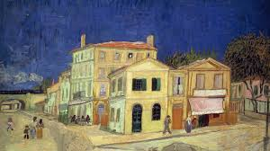

¿Qué es el arte?
En un sentido general, el arte es cualquier actividad humana que recurre a emociones y al intelecto para crear obras que tienen características estéticas. Esto agrupa ámbitos diferentes -como la escultura, la pintura, la danza, la poesía, la cocina, el cine, los grabados, el teatro, las historietas, la fotografía y el arte numérico- los cuales han ido evolucionando a lo largo de la historia de la humanidad.
